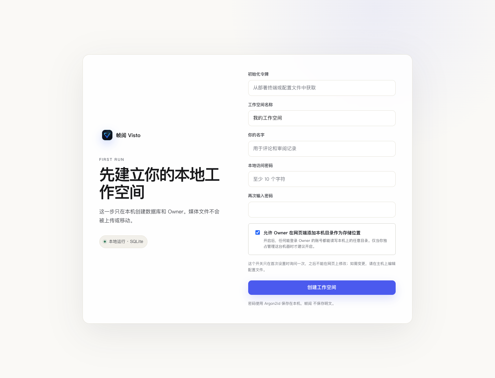

文档中心/安装与初始化
VISTO USER GUIDE / 10
首次设置与登录
用户手册2026-10-03Server 浏览器工作台
首次打开一个尚未初始化的实例，会看到“先建立你的本地工作空间”。这个过程创建数据库中的工作空间和 Owner，不会替你移动已有媒体。


看图操作： 先核对初始化令牌，再填写身份信息；最下方的主机目录权限影响后续存储配置，提交前决定好。
填写首次设置
| 字段 | 如何填写 | 说明 |
|---|---|---|
| 初始化令牌 | 由部署维护者在主机取得 | 原生 macOS 从配置目录读取；Docker 使用启动时生成的值 |
| 工作空间名称 | 如“视频制作团队” | 会出现在工作台，名称应让成员容易辨认 |
| 你的名字 | 如“项目负责人”或真实姓名 | 用于评论和审阅记录，不是共享身份 |
| 本地访问密码 | 至少 10 个字符的强密码 | 不与其他网站复用 |
| 再次输入密码 | 与上面完全一致 | 输入不一致时不能提交 |
macOS 读取初始化令牌：
sudo cat /Library/Visto/config/host-management-token
令牌用于首次领取初始化权限，和日常登录密码不同。不要把该输出贴到聊天、截图或公开 Issue。
一次性的主机目录权限
“允许 Owner 在网页端添加本机目录作为存储位置”默认开启。开启后，Owner 网页会话能配置主机目录，适合由你独占管理的机器；不信任所有 Owner 登录环境或部署在共享主机时，应由维护者评估后选择关闭。
该选项首次设置后不能在网页上更改。需要调整时由主机维护者编辑 visto.env 的 VISTO_ALLOW_WEB_HOST_PATHS：0 关闭，1 强制开启，然后重启服务。当前生效状态可在 Owner 设置 → 网络与安全 查看。
关闭后普通网页不能添加本机路径。项目成员仍可使用已经授权给项目的存储；如果必须添加新的主机目录，请联系部署维护者，不要求成员知道服务器真实路径，也不把 Desktop 当作免费版前置条件。
日常登录
初始化完成后，日常使用成员邮箱和密码进入。旧工作空间 / 首次 Owner 可能尚未设置登录邮箱，登录页提示允许邮箱留空时可使用原访问密码。登录后在“我的账户”确认个人身份与可用资料；新增成员使用独立邀请或注册流程。
完成检查与问题处理
- 成功后进入项目列表，而不是仍停留在创建表单。
- 密码错误、令牌错误和创建失败会显示提示，先按提示修正，不重复初始化。
- 已有实例突然出现首次设置页时，先核对浏览器地址和数据目录是否指向原实例。不要立即创建一个新工作空间覆盖问题。
- 忘记 Owner 密码时联系主机维护者，通过当前版本支持的账号恢复方式处理，不删除数据库重新初始化。